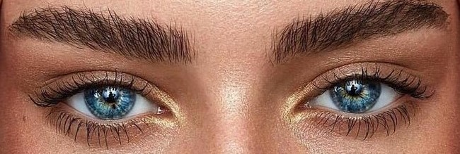

Когда мы смотрим человеку в лицо, одно из первых, на что мы устремляем свой взгляд - это брови. Если брови слишком длинные или слишком короткие (или вообще отсутствуют), это меняет все.

Очень часто мы недооцениваем роль бровей на нашем лице. Помимо первоначальной функции передачи эмоциональной палитры (удивление, гнев ), брови способствуют нашей привлекательности, они подчеркивают достоинства внешности. Выбирая форму бровей, мы выбираем характер своей внешности и образа в целом, делаем наше лицо более выразительным.
Давайте посмотрим правде в глаза, брови могут либо создать, либо испортить весь внешний вид, если они подобраны неправильно. Неверно выбранная форма бровей способна заставить человека выглядеть гораздо старше его возраста или сделает определенные черты лица крупнее или наоборот мельче, чем они есть на самом деле.
Форма бровей менялась с течением времени, когда-то в моде были тонкие ниточки, удивленно приподнятые, но сейчас большей популярностью пользуется чуть скорректированная природная форма или же изогнутая.
Толстые и прямые, тонкие и полукруглые - как выбрать, что же подходит именно вам? Разберемся во всем по порядку!
Правильная форма.
Верно подобранная форма, изгиб и толщина бровей способны омолодить и смягчить черты лица, а для глаз можно даже добиться лифтинг эффекта.
Рассмотрим подробнее, какая форма бровей лучше подойдет вашей форме лица.
Дугообразные брови
Стоит удалить всего несколько волосинок, чтобы достичь отличного результата.
Полукруглые, без излома, сделают лицо более округлым и значительно смягчат черты лица. Но с такой формой стоит быть очень осторожным, если брови сделать слишком тонкими, то можно превратиться в диву старого Голливуда. Все мы помним, какими прекрасными были Марлен Дитрих или Грета Гарбо, но такие брови смотрелись прекрасно только на них, в современном мире, увы, такие брови можно назвать вульгарными.
Брови с изломом
Раз уж вспомнили о дивах, то на ум приходят сразу брови темпераментной красавицы Элизабет Тейлор идеальный пример того, как выглядят брови с изломом. Этот тип бровей всегда будет играть в команде своей обладательницы, а не против нее, поскольку делает внешность гораздо более юной и немного лукавой.
Восходящие брови
"Крылья ласточки" и "брови вразлет" это как раз о восходящих бровях. У таких бровей хвостик располагается чуть выше начала брови. Подобный вид бровей считается идеальным, он придает лицу живость и делает взгляд открытым. Подходит для любой формы лица!
Существует хитрость чтобы найти идеальную форму бровей, необходимо следовать абрису верхней губы. Вообразите, что линия бровей соединяется на переносице естественным способом, так вот контур, который образовывают брови, должен точно совпадать с линией верхней губы.
Изогнутые брови
Эта форма бровей смотрится очень красиво и профессионально. Подходит для любой формы лица.
Горизонтальные брови
Горизонтальные брови невероятно подходят женщинам с тонкими чертами и удлиненной формой лица. Ровная линия бровей создаст иллюзию того, что лицо более округлое, чем есть на самом деле, поэтому ровные брови спасительны в том случае, если лицо очень длинное. Тонкая и хрупкая Одри Хепберн носила такие брови и они ничуть не портили ее, а лишь дополняли образ. Всем остальным стоило бы опасаться таких форм, поскольку перегруженные брови могут сделать вас хмурым человеком, лишенным каких-либо эмоций. И упаси боже при таких бровях иметь лишние волоски на переносице!
Брови домиком
Бровки домиком это одна из тех форм, которая не подходит никому. Ниспадающие брови непременно будут старить лицо и сделают из любой женщины хмурого Пьеро.